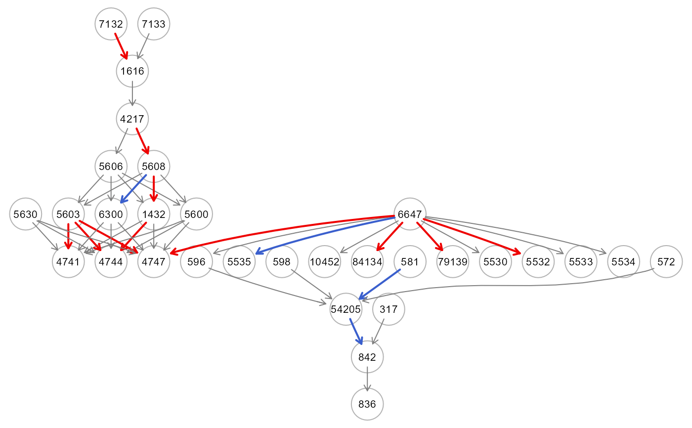

R/SEMdnn.R
getConnectionWeight.RdThe function computes the matrix multiplications of hidden weight matrices (Wx,...,Wy), i.e., the product of the raw input-hidden and hidden-output connection weights between each input and output neuron and sums the products across all hidden neurons, as proposed by Olden (2002; 2004).
getConnectionWeight(object, thr = NULL, verbose = FALSE, ...)A neural network object from SEMdnn() function.
A numeric value [0-1] indicating the threshold to apply to the Olden's connection weights to color the graph. If thr = NULL (default), the threshold is set to thr = 0.5*max(abs(connection weights)).
A logical value. If FALSE (default), the processed graph will not be plotted to screen.
Currently ignored.
A list of three object: (i) est: a data.frame including the connections together with their connection weights(W), (ii) gest: if the outcome vector is given, a data.frame of connection weights for outcome lavels, and (iii) dag: DAG with colored edges/nodes. If abs(W) > thr and W < 0, the edge W > 0, the edge is activated and it is highlighted in red. If the outcome vector is given, nodes with absolute connection weights summed over the outcome levels, i.e. sum(abs(W[outcome levels])) > thr, will be highlighted in pink.
In a neural network, the connections between inputs and outputs are represented by the connection weights between the neurons. The importance values assigned to each input variable using the Olden method are in units that are based directly on the summed product of the connection weights. The amount and direction of the link weights largely determine the proportional contributions of the input variables to the neural network's prediction output. Input variables with larger connection weights indicate higher intensities of signal transfer and are therefore more important in the prediction process. Positive connection weights represent excitatory effects on neurons (raising the intensity of the incoming signal) and increase the value of the predicted response, while negative connection weights represent inhibitory effects on neurons (reducing the intensity of the incoming signal). The weights that change sign (e.g., positive to negative) between the input-hidden to hidden-output layers would have a cancelling effect, and vice versa weights with the same sign would have a synergistic effect. Note that in order to map the connection weights to the DAG edges, the element-wise product, W*A is performed between the Olden's weights entered in a matrix, W(pxp) and the binary (1,0) adjacency matrix, A(pxp) of the input DAG.
Olden, Julian & Jackson, Donald. (2002). Illuminating the "black box": A randomization approach for understanding variable contributions in artificial neural networks. Ecological Modelling, 154(1-2): 135-150. https://doi.org/10.1016/S0304-3800(02)00064-9
Olden, Julian; Joy, Michael K; Death, Russell G (2004). An accurate comparison of methods for quantifying variable importance in artificial neural networks using simulated data. Ecological Modelling, 178 (3-4): 389-397. https://doi.org/10.1016/j.ecolmodel.2004.03.013
# \donttest{
if (torch::torch_is_installed()){
# Load Sachs data (pkc)
ig<- sachs$graph
data<- sachs$pkc
data<- log(data)
#...with train-test (0.5-0.5) samples
set.seed(123)
train<- sample(1:nrow(data), 0.5*nrow(data))
#ncores<- parallel::detectCores(logical = FALSE)
dnn0<- SEMdnn(ig, data[train, ], outcome = NULL, algo= "structured",
hidden = c(10,10,10), link = "selu", bias = TRUE,
epochs = 32, patience = 10, verbose = TRUE)
cw<- getConnectionWeight(dnn0, thr = 0.3, verbose = FALSE)
gplot(cw$dag, l="circo")
table(E(cw$dag)$color)
}
#> DAG conversion : TRUE
#> Running SEM model via DNN...
#> Warning: Mask check failed! Run a new DNN with a single width hidden layer
#> Loss at epoch 10: 0.837149, l1: 0.00000
#> Loss at epoch 20: 0.847573, l1: 0.00000
#> done.
#>
#> DNN solver ended normally after 32 iterations
#>
#> logL:-29.537227 srmr:0.375218

#>
#> gray50 red2
#> 14 4
# }